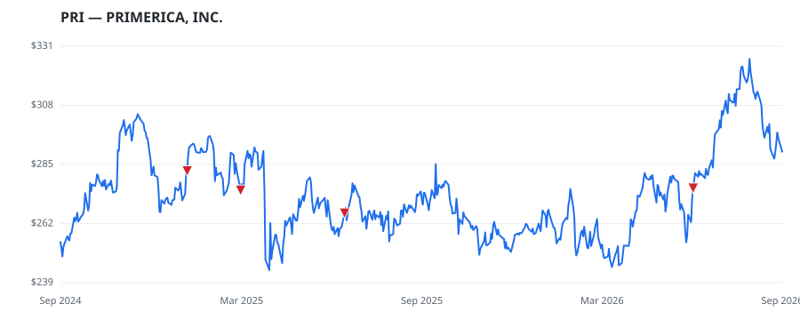

bullish · bearish · n/a — dots: price>SMA10 · SMA10>SMA50 · SMA50>SMA200 · up>down volume (20d)
Insurance · mid cap

Primerica Inc is a provider of financial services to middle-income households in the United States and Canada. The company offers life insurance, mutual funds, annuities, and other financial products, distributed on behalf of third parties. Primerica has three main subsidiaries: Primerica Financial Services, a marketing company; Primerica Life Insurance Company, a principal life insurance underwriting entity; and PFS Investments, which offers investment and savings products, brokerage services, and registered investment advisory. It has three segments Term Life Insurance; Investment and Saving LIFE INSURANCE · website
| Revenue | $3.3B | Net income | $751.2M |
|---|---|---|---|
| Operating income | $974.6M | Diluted EPS | $22.91 |
| Assets | $15.0B | Equity | $2.4B |